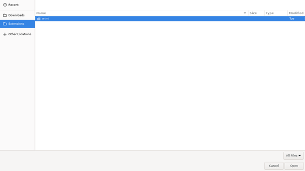

About
This post shares how I have optimized the Firefox file dialog that is common for both file uploads and downloads on OpenBSD.
Background
OpenBSD secures Firefox and Chromium through its
unveil(2) feature. As a result, each
Firefox process is limited to accessing a select number of files and
directories. For the average joe and jane, it means both ~/Downloads
and /tmp are available for file downloads and uploads by default,
and the rest of the filesystem remains off-limits.
The files referenced by /etc/firefox/unveil.* provide a complete
list of the files and directories available to each Firefox process.
The files can be edited to further restrict or expand filesystem
access, and afterwards Firefox should be restarted for the changes
to take effect.
Although unveil(2) happens to be one of the reasons I choose to use OpenBSD on the desktop, the file dialog that is available for selecting a file can be difficult to use because it assumes the entire filesystem is accessible and that's not the case 0on OpenBSD.
Bookmarks
Thankfully – the file dialog can be improved by pinning file
locations we know unveil(2) allows
access to. This can be done by editing the bookmarks file used by
GTK file dialogs to show pinned file locations. This file can be found
at ${HOME}/.config/gtk-3.0/bookmarks.
Context
The following command displays the contents of the _firefox user's
bookmarks file. Note that the _firefox user runs Firefox on my
system; this might not be the case for you. The file includes two entries:
the user's default downloads directory and a custom directory
(Extensions) manually added to /etc/firefox/unveil.{main,content}.
main@localhost$ cat /home/_firefox/.config/gtk-3.0/bookmarks
file:///home/_firefox/Downloads Downloads
file:///mnt/browser-extensions Extensions
Explanation
- file:///home/_firefox/Downloads Downloads
This line pins the defaultDownloadsdirectory, which is accessible to Firefox processes by default. - file:///mnt/browser-extensions Extensions
This line pins a customExtensionsdirectory. For this entry to be effective, the/mnt/browser-extensionspath must be explicitly added to theunveil(2)rules for Firefox processes (eg: in/etc/firefox/unveil.{main,content}).
Conclusion
Context
With the bookmarks file configured, and Firefox restarted,
the Firefox file dialog should now display the specified
locations as easily navigable, pinned entries, as shown
in the screenshot. This resolves the minor but recurring
frustration of not having a straightforward way to access
desired file locations within Firefox on OpenBSD.
Demo
